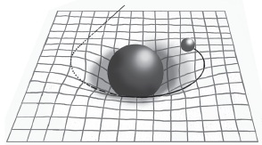
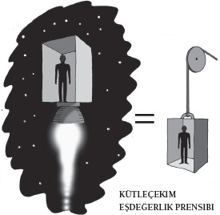

Kütleçekim, kütle
ve görelilik muamması
Kütleçekim yüzünden düşer tabii ki. Bunu herkes bilir. Fakat kütleçekimin temel niteliği nedir? Kütleçekim, doğanın bilincinize işleyen temel güçlerinden ilki olsa da bu soruyu cevaplamak çok daha zordur.
İşte size evde deneyebileceğiniz bir deney. Altı aylık bir bebeğe ihtiyacınız olacak (ödünç alabilirsiniz). Bebeğin oyuncaklarından birini, bir çıngırağı oltaya bağlayın. Sonra oyuncağı tavandan sarkıtın; öyle ki olta gergin ve görünmez bir haldeyken oyuncak hafifçe bir sandalyenin üzerinde dursun. Sandalyeyi iterken bebeğin olup bitenleri izlemesini sağlayın. Gözünüz bebeğin gözlerinde olsun; çıngırağın yere düşmemesi için ortada belirgin bir sebep yoktur; bebeğiniz çıngırağa normalden daha uzun bir süre boyunca bakacaktır.
Psikologlara göre, bebekler şaşkınlıklarını böyle ifade ederler. Öyle görünüyor ki şaşırtıcı derecede küçük yaşlardan itibaren şeylerin desteklenmediğinde aşağı düştüğünü biliyoruz ve düşmezlerse hayrete kapılıyoruz. Victoria dönemi illüzyonistlerinin yaptığı kaldıraç numaralarının koca bir kuşağı kendinden geçirmiş olmasına şaşmamak gerek. Bir şeyler kütleçekimi oyuna getirdiğinde, ciğerimizin köşesi burulmuş gibi olur.
Gördüğünüz gibi kütleçekim bir tirandır. Oyuna getirilemez. Bir elektrik alanı ya da manyetik alanda yaptığımız gibi onu devre dışı bırakamayız. Karşısına bir karşıt güç de çıkaramayız; öyle görünüyor ki fizikte bizi kütleçekimi karşıtı bir güçle donatacak bir şey yoktur. Kütleçekim kuralı insan deneyimi açısından o kadar merkezi bir önemdedir ki esasen kütleçekimin varlığını unutmuşuzdur. Ancak yokluğunda –daha doğrusu belirgin yokluğunda– kütleçekimin her zaman var olduğunu hatırlarız.
Belki de bu yüzden bilim alanındaki ilk atılımlarımız kütleçekimi büyük ölçüde görmezden gelmiştir. Kütleçekim şimdi anladığımız biçimiyle, bir eylem tipi, bir insanın düşüşüne, bir okun uçuşuna, gezegenlerin hareketine hükmeder; fakat Aristo’nun ders kitabı Physics evreni yöneten evrensel bir güçten bahsetmemektedir. Aristo, Dünya’nın ağırlığı yüzünden nesnelerin Dünya’dan düşmediğini ileri sürmüştür, gelgelelim akıl yürütme biçimi sallantılıydı. Aristo Dünya’nın çekim gücünün bir nesnenin ne kadar büyük olduğuna ve neden yapılmış olduğuna bağlı olduğunu ileri sürmüştür.
Aristo’nun bakış açısına göre ağır nesneler hafif nesnelerden daha hızlı düşer. Bunun sebebi Yunanlıların elementlere yoğunlaşmış olmalarıdır; Toprak, Hava, Ateş ve Su. Aristo’nun bildiği ağır nesnelerin çoğunluğu, Toprak’ta bulunan malzemelerden oluşmuştu ve Toprak’a geri dönmek zorunda oldukları için güçlü bir çekim vardı. Bizim anlayışımız, 2000 yıl önceki bu kusurlu fikirden aslında pek de uzaklaşmış sayılmaz. Nihayetinde İtalyan bilim adamı Galileo Galilei, Aristo’nun hatalı olduğunu ortaya koymuştur: Ağır nesneler Toprak tarafından daha güçlü bir biçimde çekilmez. Havanın direnci bir etken olmadığı sürece, biri ağır, diğeri hafif bir nesne aynı hızla düşeceklerdir.
Düşmek Kadar Kolay
Ne yazık ki Galileo’nun bununla ilgili kanıtlarına dair romantik hikâyeler –eğik Pisa Kulesi’nden havan topları atması– doğru değildir (bu efsanenin kaynağı Galileo’nun öğrencisi Vincenzo Viviani’dir); fakat yine de bu durum çok daha seyre değer bir biçimde kanıtlanmıştır. 1971’de Apollo 15’in astronotlarından David Scott ayın yüzeyine doğru bir çekiç ve bir şahin tüyü bırakarak bu keşfin köklü sonuçlarına saygı duruşunda bulunmuştur. Scott elindekileri bırakırken “Bugün buraya gelmiş olmamızın sebeplerinden biri Galileo adındaki bir beyefendidir,” demişti. Elbette ki çekiç ve tüy yere aynı anda inmiştir.
Scott’ın takdiri neredeyse doğrudur: Şaşırtıcıdır, ama gerçekten de aya ulaşmamızı sağlayan şey Galileo’nun 17. yüzyıldaki kavrayışından fazlası olmamıştır. Aradaki boşluklar Galileo’nun ölümünden yalnızca bir yıl sonra doğan bir adam tarafından doldurulmuştur: Isaac Newton. Doğduğunda hiç de etkileyici bir yönü olmayan Newton’ın –annesi yaklaşık “bir litrelik bir kaba” sığabileceğini söylemişti– dört yüzyıl sonra Apollo astronotlarının izleyeceği yolu çizebilmesi için gerekli bütün bilgileri toplayabilmesi yalnızca 20 yılını alacaktı. İşte tam bu sırada elma sahneye çıkacaktı.
Galileo’nun eğik Pisa Kulesi’nde yaptığı deneylerle ilgili hikâyelerin tersine, Newton’ın düşen bir elmanın karşısında kütleçekimle ilgili olarak yaşadığı vecd hali neredeyse kesinlikle doğrudur. 1666 yılıydı, yazın son günleriydi. Newton Lincolnshire’da Woolsthorpe Malikânesi’ndeki bahçesinde oturuyordu. Elma ağacı hâlâ oradadır, her sonbahar meyve verir.
Elma düşer, çünkü kütle denilen bir özelliğe sahiptir; Dünya da öyle. Newton’ın ileriye doğru attığı büyük adım, kütleye sahip olan her şeyin kütleye sahip olan her şeyi çektiğini söylemek olmuştu. Daha gencecikken, 23 yaşında oluşturduğu kütleçekim kanunu çekim gücünün bu iki kütleye, aralarındaki mesafeye ve G olarak bilinen bir sabite bağlı olduğunu söylüyordu.
Aslında fizikçiler kütleçekim sabitine fazlasıyla aşinadır; Dünya’nın kütleçekim çekiminden kaynaklanan ivmeyi ifade eden küçük g’den ayırmak için bu sabite “Büyük G” derler. Fakat aşinalığına rağmen G aslında bütün temel sabitler içinde en az tanımlanmış olandır.
Başka bütün sabitler gibi, G’nin büyüklüğü teorik argümanlarla değil, ölçümlerle öğrenilebilir. G’yi ilk ölçen 1798’de İngiliz fizikçi Henry Cavendish olmuştur; Cavendish birbirlerine bilinen bir mesafede bulunan bilinen iki nesne arasındaki kütleçekimi ölçmüştür. G için bulduğu cevap 6,754 x 10-11 m3 / kg / saniye2’dir. Bugünse G resmen 6, 67428 x 10-11 m3 / kg / saniye2’dir. Bu ölçümün belirsizliği yaklaşık 10.000’de birdir. Bunu başka temel rakamlarla ilgili olarak bildiklerimizle kesinlikle karşılaştırın, örneğin kuantum kuramında kullanılan Planck sabitiyle: Planck sabitinin belirsizliği 100 milyonda 2,5’tur.
G’yi doğru bir biçimde ölçmenin bu kadar zor olmasının iki sebebi vardır. İlki, bilinen fiziği kullanarak kütleçekim alanları belirlememizin imkânsız olmasıdır. Bu da herhangi bir ölçümün görünürdeki bütün nesnelerin etkisini dikkate alması gerektiği anlamına gelir. Bu da ölçümleri dış etkilere karşı akıl almaz derecede duyarlı hale getirir; iki laboratuar ötedeki biri bürosuna koca bir kitap yığını getirdiği için, aygıtlarını yeniden ayarlamak zorunda kalan araştırmacılara dair hikâyeler anlatılır. İşte bu yüzden kütleçekim ölçümlerinin olağanüstü derecede duyarlı aletler kullanarak yalıtılmış laboratuarlarda yapılması gerekir.
Kütleçekim sabitini ölçmekteki ikinci güçlük, kütleçekimin temel kuvvetlerin en zayıfı olmasıdır. Bütün gezegenin kütlesi onu aşağı çekiyor olsa da elma yere düştüğünde, nispeten küçük bir ivmeyle düşer. Kütleçekimin zayıf olduğuna ikna olmadıysanız –belki de paraşütle atlamışsınızdır ya da bir lunapark trenine binmişsinizdir ya da korkutucu bir ivmelenme yaşamışsınızdır– buzdolabınızın kapısında güzel güzel duran mıknatısları bir düşünün. Koca gezegenin kütlesi onları da yere doğru çekmektedir; gelgelelim düğme büyüklüğünde, mıknatıslanmış bir demir, gezegenin çekimine direnebilir. Mıknatıslanma bir mıknatısın içindeki yüklü parçacıklar arasındaki elektromanyetik etkileşimden kaynaklanır. Ve bu kuvvet, parçacıkların arasındaki kütleçekim kuvvetinden 10-42 kat –yani bir trilyon trilyon trilyon trilyon kat– daha büyüktür. Bu yüzden de kütleçekim zayıftır: G şaşırtıcı derecede küçüktür. Ama neden? Kütleçekimin zayıflığı fiziğin temel gizemlerinden biri olsa da bunu açıklayabilecek bazı fikirlerimiz var. Bu fikirlerin en iyisi de kütleçekimin evrenimizin içine ya da dışına “sızıyor” olduğudur.
Başka Bir Dünyadan Sızıntılar
Modern fiziğin çeşitli dalları uzayın aşina olduğumuz üç boyuttan (yukarı ve aşağı, sağ ve sol, ön ve arka) daha fazla boyuta sahip olduğunu söyler. Bunun sonuçlarından biri bazı kuvvetlerin bu fazladan boyutlara dağılarak “eriyebilecek” olmasıdır. Kütleçekim kuvveti zayıfsa bunun sebebi, diğer kuvvetlerden daha ince bir biçimde yayılmış olması olabilir.
“Fazladan” boyutların “sıkıştırılıp” çok küçük bir hale geldiği –esasen yuvarlandığı– bu yüzden de gündelik hayatımızda bu boyutları tecrübe edemediğimiz düşünülmektedir. Bu şimdilik sadece bir teoridir; fakat birkaç araştırmacı bu teoriyi doğrulayacak kanıtlar aramaktadır. Bir yol, iki nesne arasındaki kütleçekimin nesneler arasındaki mesafeye bağlı olarak değişmesinin incelenmesidir.
<>
“Bugün buraya gelmiş olmamızın sebeplerinden
biri Galileo adındaki bir beyefendidir.”
DAVID SCOTT
<>
Newton kütleçekimin “ters kare kanununa” uygun olduğunu göstermişti. Bu, bir nesnenin bir diğer nesne üzerine uyguladığı kütleçekimin aralarındaki mesafenin karesi nispetinde azaldığı anlamına gelir. İki nesneyi bir metre ayırıp aralarındaki kütleçekimi ölçün. Sonra birbirlerinden iki metre daha uzaklaştırıp aralarındaki çekimi bir kere daha ölçün. Birbirlerinden üç kat daha uzak oldukları için, aralarındaki çekim de dokuz kat zayıf olacaktır.

KÜTLEÇEKİM UZAY-ZAMANDA BİR ÇARPILMADIR.
Gizli boyutlar dünyamıza milimetre altı ölçeklerde girer. Kütleçekim bu çok küçük ölçeklerde, normalde olduğundan farklı davranıyorsa –kütleler birbirinden sadece bir milimetrenin birkaç binde biri kadar ayrı olduğunda ters kare kanunu geçerli olmuyorsa– bunun sebebi bu boyutların şeylere müdahale ediyor olması olabilir. Burada bir uyumsuzluk belirleyin; böylece en cüretkâr teorilerimizi destekleyecek bir kanıtınız olabilir.
Fizikçilerin mikroskobik ölçeklerde kütleçekimi araştırmak için son derece incelikli deneyler yürütmelerinin sebebi budur. Gelgelelim şimdiye kadar, ters kare kanununun çiğnendiğine dair hiçbir kanıt bulamamışlardır. Bu çok büyük bir utanç kaynağıdır; çünkü bu ileri, çok boyutlu teorilerin oynadığı rollerden biri de elimizdeki en iyi kütleçekim kuramını, Einstein’ın görelilik kuramını iyileştirmektir.
Kütleçekim Görelidir
Einstein’ın görelilik kuramı uzay ve zamanı dört boyutlu bir doku olarak resmeder ve kütle ya da enerjinin varlığının bu dokuyu bükeceğini söyler. Newton’ın hareket halindeki cisimlerin bir kuvvet uygulanmadığı sürece düz bir hat üzerinde ilerleyeceğini söylediği noktada, Einstein bir büklüm eklemiştir. Evet, cisimler uzayda düz bir çizgi halinde ilerliyordu; ama o uzaydaki herhangi bir bükülmeyi de izliyorlardı.
Örneğin Güneş’in kütlesinin yarattığı bükülme, yakınlarda bulunan hareket halindeki bir gezegenin bükülmüş bir yörünge içine çekileceği anlamına gelir. Kütleleri ve hareket hızını dengelediğinizde bir yörünge elde edersiniz. Bu yüzden de Einstein’ın bakış açısına göre kütleçekim bir tür yanılsamadır. Uzay ve zamanda etkili olan bir kuvvet gibi görünse de aslında daha çok manzaraya eklenmiş topografik özellikler –tepeler ve vadiler– gibi, belli yönlerde hareket etmeyi zorlaştıran, başka bazı yönlerde hareket etmeyi kolaylaştıran özellikler gibi hareket eder.
Ne kadar doğru olsa da, çok sayıda deneysel bulguyla destekleniyor olsa da bunun nihai cevap olmadığını biliyoruz. Bir bakıma Einstein bize sadece kütleçekimin nasıl işlediğine dair akıllıca bir tasvir sunmuştur. Neden sorusu hâlâ cevap beklemektedir. Gerçi ümit vardır. Şimdiki haliyle görelilik kuramı, kuantum kuramıyla uyumlu değildir. Gelecekteki bir “kuantum kütleçekim kuramının” bu iki kuramı birleştirmesini beklememiz gerekiyor. Bu kuram da muhtemelen bize kütleçekimin nedenini verecektir; tıpkı kısa süre önce kütlenin nedenini kavramaya yaklaştığımız gibi.
Şimdiye dek kütle hakkında neşeyle konuşup durduk, ama apaçık sorudan kaçındık. Bir şeyin kütleye sahip olması ne anlama gelir?

Fizikçiler kütleyi iki farklı biçimde sınıflandırırlar. Biri “kütleçekimsel kütle”dir; yani kütleçekim alanlarını oluşturup bu alanlara cevap veren kütle. Elmanın düşmesine neden olan bu kütledir. Diğeriyse “atıl kütle”dir; bir şeyi hali hazırdaki hareket ya da durma halinden uzaklaştırmakta çekilen zorluğun ölçüsüdür. Bozulmuş bir arabayı itmeye çalıştığınızda, kütlesi size karşı gelir.
Bilebildiğimiz kadarıyla atıl kütle ve kütleçekimsel kütle tümüyle birbirine eşdeğerdedir. Dünya’nın üzerinde, asansör gibi kapalı bir kutunun içinde durduğunuzu düşünün. Kütleçekimsel kütleniz kütleçekimin etkisine cevap verirken yerin itişini hissedersiniz. Şimdi de bu asansör kutusunu uzaya çıkardığınızı, kütleçekim alanlarından uzaklaştırdığınızı düşünün; bir de bu kutuya onu saniyede 9,81 metre ivmelendiren bir roket motoru taktığınızı düşünün. Bu, Dünya’nın yüzeyindeki kütleçekimden kaynaklanan ivmelenmeye eşittir.
Hissedişinizde hiçbir farklılık olmayacaktır; Einstein böyle der. Kütleçekim kütlenizle atıl kütleniz arasında hiçbir fark olmadığını söyleyen bu “eşdeğerlik ilkesi” Einstein’ın genel görelilik kuramının köşetaşlarından biridir. Bunun kesinlikle doğru olduğunu gösteren belirgin bir kanıtımız olmasa da deneyler bunun en azından 10-12 oranında doğru olduğunu göstermiştir. Fakat Einstein genel görelilik kuramını yaratmadan on yıl önce kütle hakkında başka bir soru yöneltmiştir. 1905’te, özel görelilik kuramını yayınladığı o “mucizevi yılda” Einstein ilginç bir araştırma çizgisi yakalamıştı. Köşetaşı niteliği taşıyan bir araştırmasında bir cismin ataletinin enerji içeriğine bağlı olup olmadığını sormuştu.
Ağırlığın Enerjisi
Dünyanın en ünlü denklemi olan E=mc2’nin kökeninde bu vardır (bakınız Neden E=mc2?). Einstein’ın bakış açısına göre enerji ve kütle yer değiştirebilirdi. Bunu söylemek neredeyse bir asır almıştır, ama artık enerjinin gerçekten de kütlenin kökeni olduğunu biliyoruz. Örneğin şu elmayı ele alalım. Elmanın kütlesi onu oluşturan bileşenlerde bulunmaktadır. Ölçekte biraz daha aşağıya inersek, bu bileşenler moleküllerdir; moleküller atomlardan, atomlar elektronlardan, protonlardan ve nötronlardan oluşur.
Elektronun kütlesinin kökeni (proton ve nötronun kütlesinin binde birine eşittir) gizemini korumaktadır. Fakat fizikçiler en azından protonlar ve nötronların kütlelerini anlamaya başlamışlardır. Bu parçacıkların her biri kuark denilen üç parçacıktan oluşmuştur. Fakat kuarkların kütleleri protonlar ve nötronların kütlesinin yaklaşık % 1’ini oluşturabilir. Kütlelerinin geri kalanı gölgelerin içinden, enerji çalan “sanal parçacıkların” kuantum dünyasından gelir.
Aşağıda, kuantum ölçeğinde, kurallar gündelik hayatta karşılaştığımız kurallardan çok farklıdır. Burada “Heisenberg’in belirsizlik ilkesi” denilen bir fenomen hüküm sürer ve tuhaf fermanlar buyurur. Bunlardan biri hiçbir şeyin kesin bir miktarda enerjiye sahip olmamasıdır; bu enerji sıfır bile olsa. Bunun yerine enerji sıfır civarında salınır, görünürde boş olan uzayın –fizikçilerin ‘boşluk’ dediği şeydir bu– beliren ve kaybolan parçacıklarla dolmasını mümkün kılar.
Bu parçacıklar çiftler halinde belirir: Bir parçacık ve karşıt parçacığı, boş uzayın boşluğunun enerjisi sıfır civarında salınırken yaratılır. Fiziğin “kuantum kromodinamiği” denilen, Nobel Ödülü kazanmış bir dalına göre parçacıklar çeşitli miktarlarda enerjiyle belirebilir; böylece bir karakterler yelpazesinde ortaya çıkabilir. Kimi zaman fizikçilerin “glüon” diye bildikleri bir biçimi alacaklardır. Glüonlar güçlü nükleer kuvvet olarak bilinen bir kuvveti yaratırlar; güçlü nükleer kuvvet kuarkları bir arada tutarak bir protonun ya da nötronun oluşmasını sağlar. Elmaya kütlesinin büyük bölümünü veren de glüonlardır, yani glüonların enerjisi. Bu sanal parçacıkların tümünün enerjisinden tam olarak ne kadar kütle ortaya çıktığını hesaplamak kolay olmamıştır; 10.000 trilyon rakamla ezici kombinasyonlar kurulması gerekmiştir. Fakat sonuçlar belli olduğunda, elde edilen sonuçların bu parçacıkların deneysel olarak kaydedilmiş kütlelerinden % 1-2 sapma gösterdiği bulunmuştur.
Glüonlarla ilişkilendirilen, Einstein’ın E=mc2 formülüyle çevrilen enerji bir proton ya da nötronun kütlesinin neredeyse tamamını oluşturur. Çok az şey kaybolur: Gizemli elektron kütlesi, sanal kuarklar ve karşı kuarklar, Higgs bozonu gibi daha sanal bazı parçacıkların katkıları (bkz. Tanrı Parçacığı Nedir?). Fakat esasen elmanın kütlesi –ve Dünya’nın kütlesi– boş uzayın boşluğunun içerdiği enerjinin bir tezahürüdür.
Kuantum kromodinamiğinin kütlenin kökenini ortaya çıkarmaktaki başarısı fizikçilere, benzer fikirlerin bizleri nihayetinde kütleçekimin nihai nedenine götüreceği umudunu vermiştir: Bu neden gravitondur. Elektrik kuvveti ve manyetik kuvvet, foton denilen enerji paketlerini değiş tokuş eden atomlar yoluyla tezahür eder. Güçlü nükleer kuvvet, daha önce de görmüş olduğumuz gibi glüonlar yoluyla gelir. Zayıf nükleer kuvvetinse W ve Z bozonları olarak bilinen enerji yüklü parçacıkların alınıp verilmesi sonucu oluştuğu bilinmektedir. Bunların hepsi deneylerle görülmüştür. Kütleçekimin “graviton” olarak bilinen parçacıkların alınıp verilmesine bağlı olduğu düşünülmektedir. Fakat bütün bunlar hâlâ birer varsayımdır. Anlayışımızın kaydettiği bütün ilerlemelere rağmen, hâlâ bir graviton görebilmiş değiliz.
Ne var ki kütleçekimle ilgili olarak varlığını sürdüren tek sorunumuz bu değildir; çok daha utanç verici ve temel bir mesele henüz çözüme kavuşturulmamıştır. Tuhaf görünebilir; en dahi beyinleri, en büyük bilgisayarları, fiziğin en büyük kuramlarını kullanarak kütlenin kökeni üzerine çalışmış olsak da kütleçekimin üzerinde etkili olduğu şeyi, yani kütleyi ölçmenin iyi bir yolunu henüz bulabilmiş değiliz. Başka bütün standart ölçüm birimlerinin kesin, atomik bir temeli vardır. Saniye sezyum atomunun belli sayıdaki salınımına dayanır. Metre, ışığın bu saniyenin belli bir bölümünde aldığı mesafedir. Fakat kilogram Paris’te bir mahzende saklı tutulan bir metal külçesinin kütlesidir.
Değişen kilo
Tabii burası öyle eski bir mahzen değildir: Paris yakınlarındaki Uluslararası Ağırlık ve Ölçüm Bürosu’nun kutsal duvarlarının arkasında bulunmaktadır. Kilogram öyle eski bir metal de değildir: Eldeki en istikrarlı, en bozulmaz madde olarak seçilmiş platinden yapılmış bir silindirdir. Diğer bütün kilogramlar, bu platin silindirin kütlesine göre ayarlanır. Sorun şudur ki bu silindirin kütlesi değişmektedir. Metrologlar bu platin silindirin onlarca kopyasını çıkarmışlardır, orijinal silindir artık eski ağırlığında değildir. Eski ağırlığıyla arada yaklaşık 100 mikrogramlık bir fark vardır; bu da kabaca bir-iki çimdik tuzun kütlesine eşittir. Araştırmacılar atomik ölçümleri kullanarak kilogramı diğer standartlara uygun hale getirmenin yollarını aramaktadırlar. Bir umut, belirlenebilir sayıda atom içeren cilalanmış bir silikon küre yapmaktır. Böylece kilogram belli sayıda silikon atomunun kütlesi olarak tanımlanabilecektir.
Bir başka olasılıksa, kütleyi enerji terimleriyle ölçmek için Watt dengesi denilen bir şeyi kullanmaktır. Einstein kütle ile enerjinin yer değiştirebildiğini söylemişti; Watt dengesi bunu hatırlatır ve titiz bir biçimde yapılandırılmış bir elektromanyetik alanın içerdiği enerjinin ne kadar kütleye karşılık geldiğini ölçer. Fakat bu planlar meyve verinceye dek Newton’ın formülüne hafifçe yanlış rakamlar sokuşturmaya takılıp kalmış durumdayız.
Kütleçekim bizim her şeyimizdir; parçacıkları bir araya getirip Dünya’yı oluşturur, bizi hayat veren Güneş’imizin yörüngesinde tutar, hayatın oluşmasını ve karaya çıkmasını mümkün kılan dalgaları yaratır. Şimdi de bize yapılmış bu iyiliğin karşılığını ödüyor; kütleçekimine takılmış zihinlerimizi bu çekimin niteliğine dair olağanüstü keşifler yapmakta kullanıyoruz. Fakat şu da var, onu ölçebilmek için elimizde sadece ilkel bazı aletler var. Elmanın içindeki atomların nükleer yapısındaki glüonlardan bahsettiğimizde, elmanın ağırlığının ne kadar çektiği konusunda kesin bir şey söyleyemeyiz. Kütleçekimin özü ele geçmezliğini koruyor ve bu ele geçmezlik hâlâ zevk veriyor.